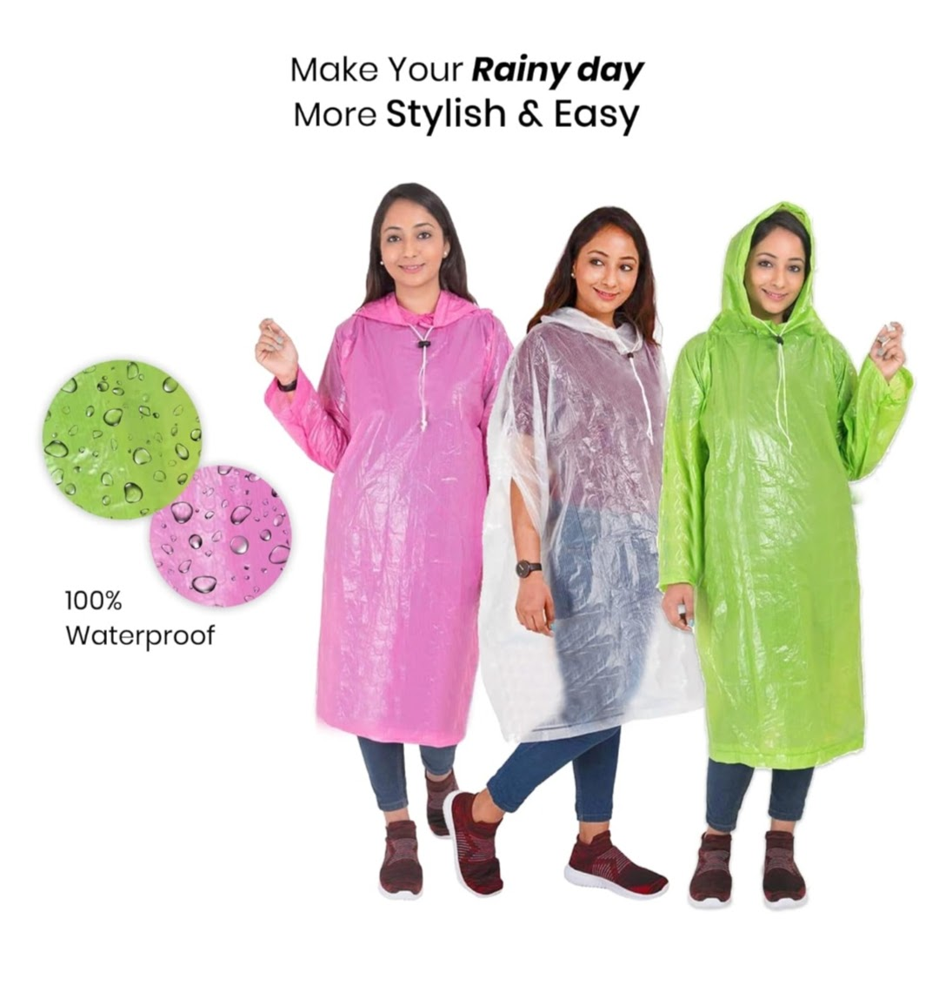
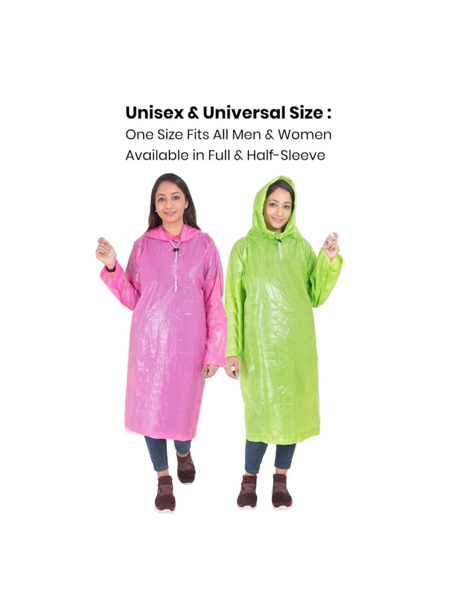
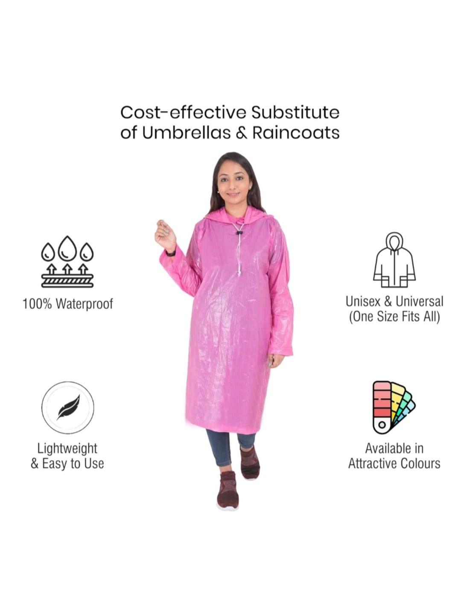
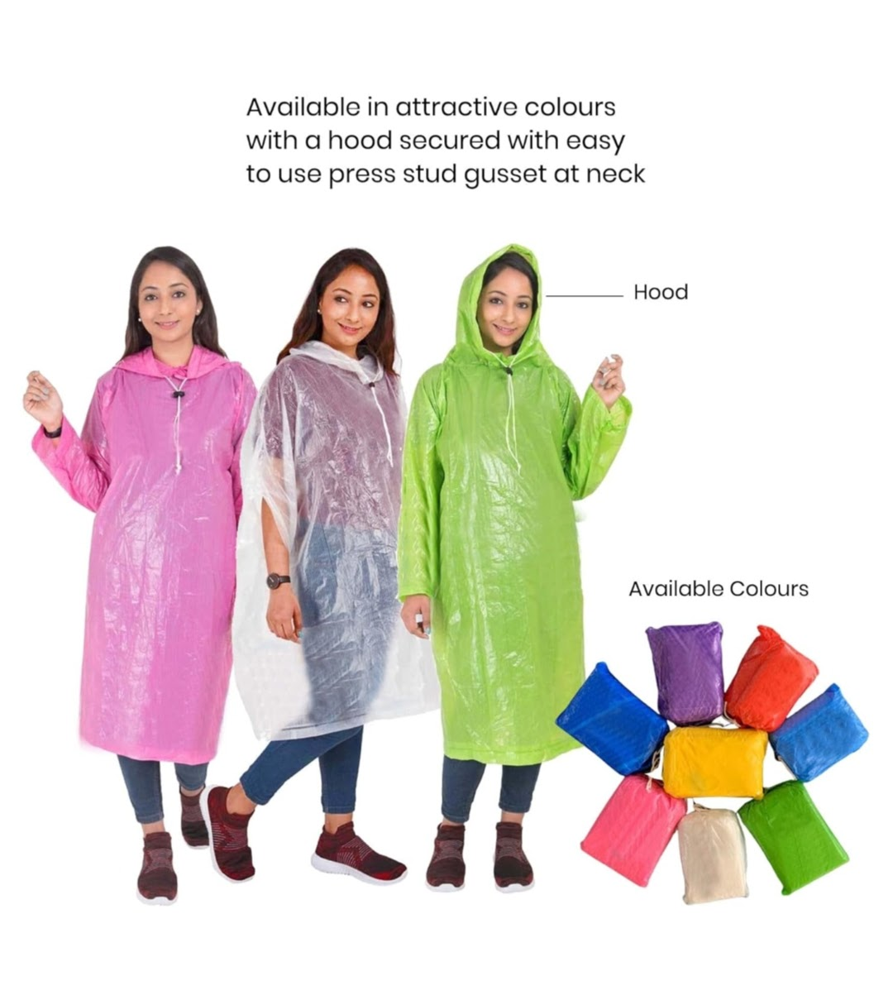
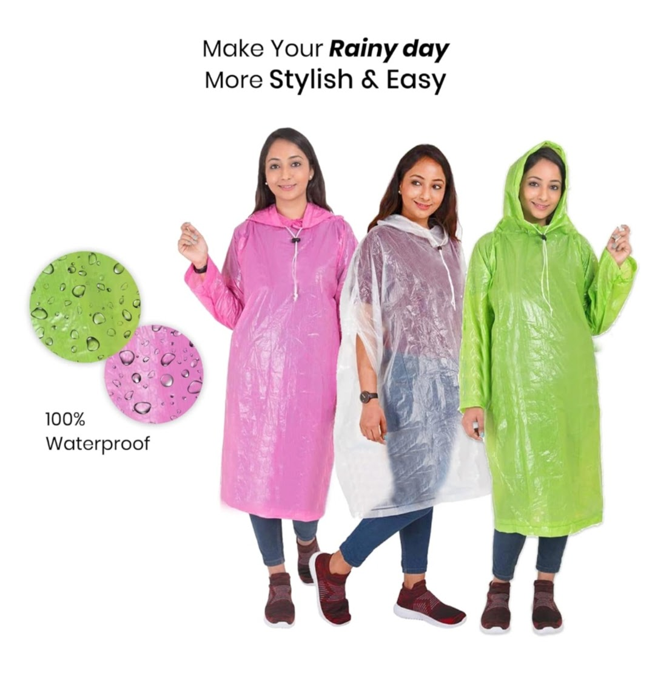
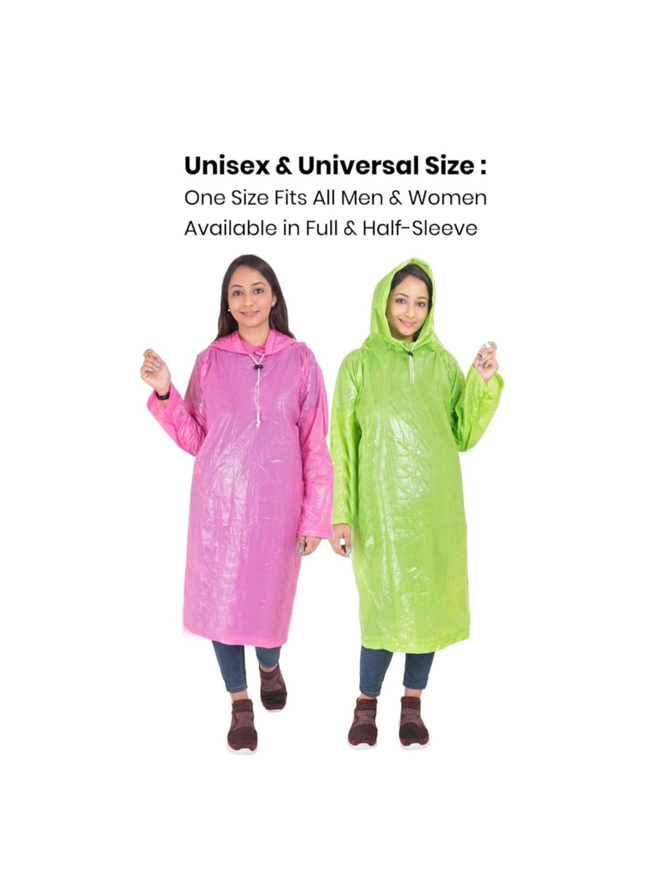
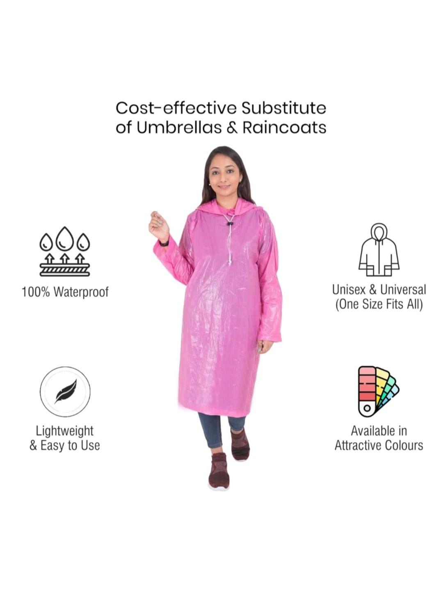
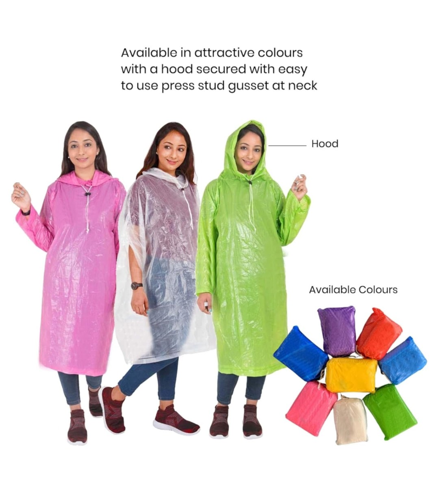

Product Overview
Rain Ponchos are simple, effective rain protection garments
designed to keep users dry during sudden or continuous
rainfall.
Manufactured using lightweight waterproof plastic material,
these ponchos are easy to carry, quick to wear, and suitable
for single-use or limited reuse depending on thickness.
Key Features
- Lightweight and easy to wear
- Waterproof and wind resistant
- Compact and foldable for easy carrying
- Available in disposable and reusable variants
- Suitable for all age groups
Specifications
- Material: LDPE / Plastic Film
- Design: Hooded poncho style
- Thickness: Varies by model
- Colour: Transparent / Blue / Yellow (varies)
- Usage: Rain protection
Applications & Use Cases
- Monsoon protection for pedestrians and commuters
- Outdoor events and crowd management
- Emergency rain protection kits
- Delivery personnel and field staff
- Travel, trekking, and pilgrimage use
Best Suited For
- Municipal bodies and disaster management teams
- Event organizers and outdoor venues
- Delivery companies and field service teams
- Retailers and travel kit suppliers
Selection Note
For Indian monsoon conditions, disposable ponchos are ideal
for emergency and short-term use, while thicker reusable
ponchos are recommended for repeated outdoor work. Proper
size and hood fit ensure better rain protection during wind.
Commonly Used Along With
- Raincoats and Waterproof Jackets
- Safety Boots or Gumboots
- Emergency Kits and Travel Accessories
Product FAQs
-
Are rain ponchos reusable?
Lightweight ponchos are generally disposable, while
thicker variants can be reused multiple times with
proper handling and drying.
-
Are rain ponchos suitable for Indian monsoon?
Yes. Rain ponchos are commonly used during Indian monsoon
for quick and convenient rain protection, especially
during travel and outdoor work.
-
Do ponchos provide full body coverage?
Ponchos are designed to cover the upper body and torso.
Length may vary by size and model.
-
Are bulk supplies available for institutions?
Yes. Rain ponchos can be supplied in bulk quantities for
events, municipalities, disaster response teams, and
commercial buyers.
-
What material is used in rain ponchos?
Most rain ponchos are made from LDPE or similar waterproof
plastic films that offer flexibility and water resistance.
-
Are custom colours or packaging options available?
Yes. Custom colours, branding, and packaging options are
available for bulk and promotional requirements.
 






